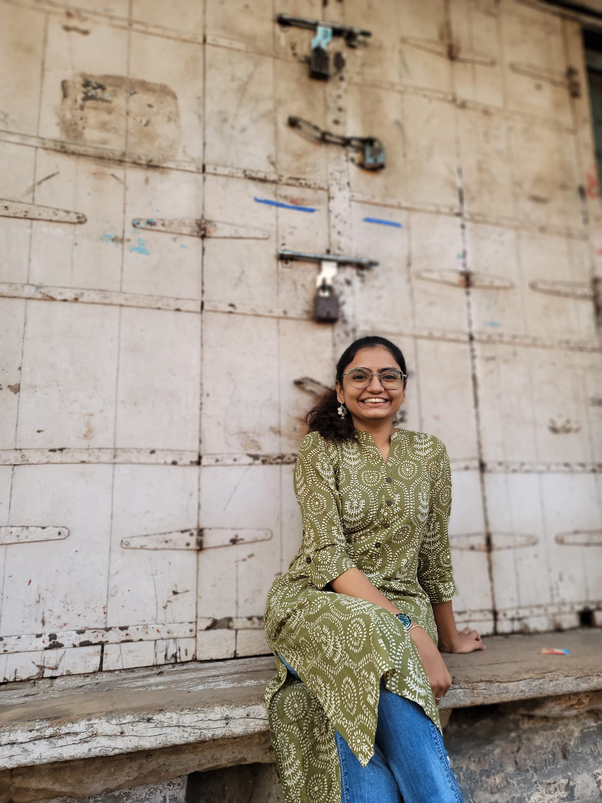

The APT South Asia Chapter is a community of architects, engineers, conservators, and advocates united by a shared commitment to preserving the built heritage of South Asia.
The APT South Asia Chapter (APT-SAC) was established in 2019 as a regional chapter of the Association for Preservation Technology International (APT) — the leading organisation dedicated to the science and technology of heritage preservation.
Our mission is to serve the South Asia region through educational and training activities at the local and national level in India, with outreach extending across the broader South Asia region — including Nepal, Sri Lanka, Bangladesh, and beyond.
We bring together professionals from architecture, engineering, conservation science, and the humanities, creating a cross-disciplinary community focused on the challenges and opportunities unique to South Asian built heritage.
Our board brings together expertise spanning conservation engineering, historic preservation architecture, preservation planning, and heritage advocacy — united by deep roots in South Asian heritage.

Board MemberConservation Engineer · Director, Khushtar Heritage Collective
Khushi is a conservation engineer, heritage enthusiast, and a keen researcher. She is the director of Khushtar Heritage Collective, an organisation that works to engage youth in the field of heritage conservation, and the founder of Indian Heritage, a social media platform promoting the rich and diverse heritage of India.
She was selected as the APT Student Scholar for the conference Preservation Beyond Politics, and was the recipient of the Martin Weaver Research Scholarship for her research on the conservation of Pol houses of Ahmedabad. She has also served as the Wiki World Heritage Coordinator at Wiki World Heritage.
She is associated with several heritage organisations including ICOMOS, ISCARSAH, APT, ESACH, EUROPA NOSTRA, and ASCE.
Historic Preservation Planning · Cornell University
Michael directs the graduate program in Historic Preservation Planning at Cornell University and serves as a member of the Baker Program in Real Estate. He chairs the board of Yosothor, Cambodia, and serves as project director for the National Council for Preservation Education, and president of Historic Urban Plans, Inc., Ithaca.
He served for a decade as chair of the Senior Board of Advisers to the Global Heritage Fund, reviewing conservation projects across Asia, the Middle East, and the Americas. His book Historic Preservation: Caring for Our Expanding Legacy (Springer, 2015) is widely referenced in the field.
AIA, LEED AP BD+C · Architect, Historic Preservation · Dallas, TX
Born and raised in India, Urmila is a licensed architect in Texas specialising in historic condition assessments, exterior envelope restorations, and rehabilitation projects. She holds an MS in Architecture (History and Theory) from Texas A&M University and a Master of Architecture–Historic Preservation from the University of Texas at Austin.
An active APT member, she currently chairs the AIA Houston Historic Resources Committee and previously served as Commissioner for the Houston Archeological and Historical Commission for five years. Her journey into architecture was inspired by a deep love of travel, hands-on work, and history.
Heritage Conservation & Management Expert · Fulbright Scholar
Divay is a Heritage Conservation & Management expert with more than 25 years of experience. He headed the Architectural Heritage Division of INTACH, New Delhi until March 2023. An alumni of ICCROM, the University of Birmingham, and the School of Planning & Architecture, he has contributed to prestigious projects across the UK, USA, India, Afghanistan, Nepal, and Cambodia.
His restoration projects in Ladakh have won the SA UNESCO Awards of Merit & Excellence. He serves as a member of the ICC PV Government of Cambodia, the National Culture Fund, and the Advisory Committee on World Heritage Matters to ASI, Government of India. He was a visiting faculty member at the School of Planning and Architecture, New Delhi, and a Fulbright Scholar at the University of Pennsylvania 2023–2025.